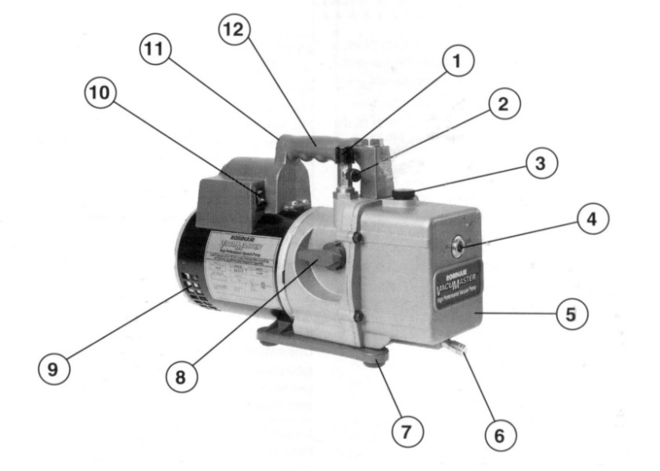

| Question du TP élève | Réponse attendue / élément de correction |
|---|
| Accroche — observation muette du manomètre témoin | Si l'aiguille ne bouge pas, l'installation témoin est étanche et stable ; c'est ce que l'élève devra prouver sur sa propre machine. Ne pas donner la réponse avant le débat — faire verbaliser d'abord. |
| Exercice fil de l'eau — 4 organes de la croix du frigoriste | Compresseur, condenseur, détendeur, évaporateur, dans cet ordre de circulation du fluide. Vérifier que chaque élève les situe bien sur SA machine (pas sur un schéma générique). |
| Exercice fil de l'eau — intrus parmi les 3 bouteilles | L'intrus est l'oxygène. Raison : l'oxygène est comburant et, au contact des huiles frigorifiques présentes dans le circuit, provoque un risque d'explosion. Seul l'azote R (azote sec) est autorisé pour l'épreuve. L'air comprimé n'est pas non plus approprié : il contient de l'humidité et de l'oxygène. |
| Mon hypothèse (avant épreuve) | Pas de bonne réponse unique : évaluer la qualité du raisonnement (état visuel des raccords observés, historique du chantier des séances 1-2) plutôt que la conclusion elle-même. |
| Protocole — raccordement (tracé sur le schéma fluidique) | La bouteille d'azote (avec détendeur) se raccorde sur la voie centrale du manifold, manifold lui-même posé sur les deux prises de pression BP et HP visibles sur le schéma (les deux vannes du manifold, de part et d'autre du corps central). La pression se lit directement sur les manomètres déjà présents sur le schéma (P / PZL côté BP, P / PZH côté HP). La vanne à entourer pour isoler le circuit est l'une des deux vannes du manifold (celle côté BP ou côté HP selon la zone testée) : c'est elle qui, une fois fermée, sépare la bouteille d'azote du reste du circuit pendant la stabilisation. Accepter toute variante cohérente avec le schéma fourni ; refuser un tracé qui raccorderait l'azote après un compresseur ou un détendeur (mauvais sens, incohérent avec un circuit à l'arrêt).
Support — schéma fluidique du poste

Même schéma que celui remis à l'élève — sert de référence visuelle pour valider son tracé pendant l'étape B (visa). |
| Protocole — pression d'épreuve | L'élève doit proposer une méthode (ex. : se baser sur la pression de service maximale indiquée sur la plaque signalétique du compresseur ou du pressostat HP). La valeur chiffrée n'est jamais donnée par l'élève ni pré-remplie : elle est fixée et validée par le professeur selon la plaque signalétique et la NF EN 378. |
| Protocole — durée de stabilisation | Une durée raisonnable justifiée (par exemple 15 à 20 minutes) permettant de détecter une fuite lente ; l'important est la justification, pas un chiffre normatif imposé. |
| Protocole — méthode de recherche de fuite | Eau savonneuse sur les raccords, brasures, presse-étoupes ; observation de la formation de bulles. Accepter aussi « détecteur électronique » si le lycée en dispose. |
| Réflexion — montée progressive en pression | Une montée brutale peut provoquer un choc de pression, endommager un composant fragile ou masquer une fuite qui ne se manifeste qu'en montée lente. |
| Réflexion — comparaison pression initiale / après stabilisation | Si les deux valeurs sont égales : pas de fuite détectée à ce stade. Si la seconde est inférieure : fuite quelque part sur le circuit, recherche à engager. |
| Conclusion sur preuve — étanchéité | Exiger que l'élève cite ses propres chiffres relevés (pas d'impression). Une conclusion sans chiffre à l'appui n'est pas recevable, même si elle est juste. |
| Pompe à vide — vérification avant mise en route | Toujours vérifier le niveau d'huile de la pompe à vide (hublot de regard) avant de la démarrer. |
| Pompe à vide — nommer les organes (1 à 12) | Noms disponibles, sourcés de la correction d'origine (« Pompe à vide, bouteille d'azote et Manifold ») : raccord d'aspiration, soupape de lest de gaz, orifice de remplissage d'huile, hublot de regard, boîtier en aluminium moulé, orifice de vidange d'huile, socle en polycarbonate, soupape ISO-VALVE (isolement de la pompe), moteur, interrupteur d'alimentation, échappement par la poignée, poignée.
Point de vigilance — la source ne précise pas quel nom correspond à quel numéro (1 à 12) sur la photo légendée du poste. À compléter par le professeur avant la séance, en pointant chaque repère sur la pompe réelle du poste (le modèle et la disposition des organes varient d'une pompe à l'autre).

Photo remise à l'élève — reporter ici la correspondance n°→nom une fois vérifiée sur le modèle du poste.
|
| Réflexion — pourquoi vérifier le niveau d'huile | Une pompe sans huile suffisante s'use prématurément et n'atteint pas le niveau de vide requis ; l'huile assure aussi l'étanchéité interne des pistons/palettes. |
| Pourquoi tirer au vide (rappel de notion) | Pour évacuer l'air et surtout l'humidité résiduelle introduite pendant le montage — élément directement issu de la source « Pompe à vide et bouteille d'azote, correction ». |
| Réflexion — remontée de pression après isolement | Deux causes possibles à faire citer : (1) une fuite sur le circuit (rentrée d'air), (2) de l'humidité résiduelle qui continue à s'évaporer et fait remonter la pression. Faire raisonner l'élève sur comment différencier les deux (une fuite continue à faire monter la pression indéfiniment ; l'humidité se stabilise après évaporation complète). |
| Conclusion sur preuve — tirage au vide | Si la dépression reste stable après isolement : installation déshydratée, la charge peut être envisagée après validation du professeur. Si remontée : recommencer le tirage ou rechercher une fuite avant toute charge.
Corrigé — allure attendue des courbes tracées par l'élève
| Cas | Allure de la courbe (pression/dépression en fonction du temps, après isolement) |
|---|
| Circuit étanche et sec | Courbe plate dès l'isolement : la valeur relevée au vacuomètre reste stable dans le temps, sans remontée notable. |
| Circuit fuyard | Courbe qui remonte de façon continue et régulière, sans jamais se stabiliser : de l'air rentre en permanence par le point de fuite. |
| Humidité résiduelle (sans fuite) | Courbe qui remonte puis se stabilise après un certain temps : l'humidité s'évapore progressivement puis la pression cesse de monter une fois toute l'eau évaporée. |
Aucune valeur chiffrée de dépression cible n'est à donner ici : elle dépend du modèle de vacuomètre et de la température ambiante (cf. NF EN 378 et plaque signalétique de la pompe).
|